ホーム ／
配信者向けガイド ／
お歌ガイド
v2.24a
読み分けちゃん2
いつものリスナーに、いつもの声を。
ツイキャス・YouTube・ニコニコ生放送・Twitch・ふわっち・ミクチャ・Kick・ミラティブに届いたコメントを、リスナーごとに違う声 で読み上げる Windows 用の無料ソフトです。
ダウンロード はじめ方（配信者向けガイド）→
稼働中のタイムライン画面（v2.13）と、リスナーごとの設定画面（クリックで拡大。右の画像は v2.10 時点＝v2.13 では左上に
[名前読み上げ設定]・[未登録者読み上げ設定] が並び、AI の許可✓が「AI(低)許可」「AI(高)許可」の 2 個になっています）
読み分けちゃん2 とは
配信に届いたコメントを、リスナーごとに違う声で読み分けて 読み上げるツールです。
ツイキャス・YouTube・ニコニコ生放送・Twitch・ふわっち・ミクチャ・Kick・ミラティブのコメント取得に対応し、VOICEVOX（無料）などの音声合成エンジンと
連携して動きます。
いちばんの持ち味は、リスナーごとの声を、配信の個性にできる こと。
常連さんにはいつもの声、初めての方にはその日の声。声の使い分けがそのまま「その配信らしさ」になります。
配信中の扱いやすさ——混み合ったときの選別、読みたい 1 件だけを拾う操作、変えた設定が次のコメントから効くこと——も、
実際の配信で使いながら整えてきました。
前身の「読み分けちゃん」（v1）を 4 年間、実際の配信で使い込み、
リスナーさんの提案を取り込みながら全面的に作り直したのがこの v2 です
（開発の背景 ）。
2026-10-14、v2.24a を公開しました。 「不具合の報告」に配信の生ログ（コメント取得ツールが受信したままのデータ）を 2 つまで添付できるようになりました （視聴者の ID・表示名・コメント本文が開発者に渡るため、[報告ファイルを作成] の前に確認が出ます。選ばなければ今までどおりです）。同日公開の v2.24 ではシャウトの反応条件に「音声認識ワード（配信者の発話）」と「メンバーシップギフト（贈り主の購入）」が増えました （マイクで言った言葉に反応して定型文を読む＝音声ワードは 2 欄・承認なし／ギフトの贈り主の購入 1 件につき 1 回・新しい置換語 $個数$）。パッドは読み上げ文を空にして効果音・わんコメ・OBS シーンだけでも順番待ちでき 、即時型パッドの✓「順番待ちさせる」で録音した声も順番待ちにできます。押せないパッドはタイルに理由が出ます。OBS 発話検出の表示（準備完了でも接続済みと出る・切断時の案内）も直しました（v2.24a／v2.24 の更新内容 ・注意書き ）。パッドで OBS のシーンを切り替えられるようになり （v2.23 の更新内容 ）、v2.22a／v2.22（10-13）では 新タブ「パッド」 ・効果音の「鳴らす長さ」の 4 択目・Kick・ミラティブ のコメント取得ツールの同梱が入りました（v2.22a／v2.22 の更新内容 ）。
以前の版からのアップデートは上書きインストール（v2.13 以降はアプリ内の「バージョン情報」タブの [更新を確認] でも）で、設定はそのまま引き継がれます 。
【ご注意】 音声認識ワードのシャウトは、音声認識タブで稼働中のときだけ鳴り、読み上げ中とその直後に重なった発話では鳴りません。新機能（配信の生ログの添付〔v2.24a〕・音声認識ワード・TTS なしの順番待ち・OBS シーン切替・パッド）と新しい配信サイトへの対応は、実際の配信での検証がまだ十分ではありません。Kick・ミラティブは利用規約で自動取得を制限しているサイトです＝ご自身の判断でお使いください（v2.24a／v2.24 の注意書き ・OBS シーン切替の注意書き ・Kick・ミラティブの注意書き ）。
以前の版の更新内容は v2.23 ・v2.22a ・v2.21a ・v2.18b ・v2.16 ・v2.14 ・v2.13 もあわせてご覧ください。
あなたはどちらですか？
ご案内は、2 つに分かれています。
ダウンロード（配信者の方）
下のボタンで配布一覧（GitHub の Releases ページ）が開きます。開いたページの Assets にある
yomiwakechan2-setup-v2.24a.exe （末尾が .exe のファイル）を選ぶと、ダウンロードが始まります。
動作環境
Windows 10 / 11（64bit）
.NET 10 Desktop Runtime（未導入でもインストーラが自動で導入します）
音声合成エンジン：
VOICEVOX（無料・お勧め） … https://voicevox.hiroshiba.jp/ 多彩な声・お歌機能をフルに使うには VOICEVOX の導入をお勧めします（別途インストール・後からでも OK） COEIROINK / AivisSpeech（いずれも無料）
棒読みちゃん（無料）
irodori-TTS-for-yomiwakechan（v2.13 で追加・GPU 推奨） ：感情や演技指示のできる声。
配布ページ のインストーラで導入します（CUDA 版／Radeon 版）。
Irodori-TTS-Server（コマンドライン導入）をお使いの方はそのまま使えますGPU（GeForce RTX シリーズ／Radeon）推奨。CPU でも動作し実配信でも使えますが、実用的ではありません
（ガイド 10 章 ） VOICEROID2 / CeVIO AI / VOICEPEAK（各製品のライセンスをお持ちの方のみ）※ VOICEPEAK は配信のために新しく購入することはお勧めしません
（1 回しゃべるたびに数秒の待ちが避けられません）。すでにお持ちの方はお使いいただけます。
何も入れなくても、Windows 標準の音声（Haruka など）で最低限の読み上げは動きます
⚠ 初回起動時に Windows の警告（青い画面）が出ます
インストーラを実行すると「Windows によって PC が保護されました 」という青い画面が
表示されます。これは本ソフトが電子署名を購入していないために出るもので、次の手順で進めてください。
青い画面の「詳細情報 」をクリック
右下に現れる「実行 」をクリック
同梱のコメント取得プログラムの初回起動時にも、同様の警告や
ファイアウォールの確認が表示されることがあります。同じように許可して進めてください。
この手順で実行してよいのは、この公式配布ページから入手したファイルだけです。
ほかの場所で配布されているファイルは実行しないでください（本ソフトの再配布は禁止しています）。
v2.24a／v2.24 の更新内容（2026-10-14）
2026-10-14 公開（v2.24a・v2.24＝同日） ／前回ここで紹介した v2.23 （2026-10-13）から入った追加・是正です。v2.24a は v2.24 の同日の追加版（不具合の報告に配信の生ログを添付＝最初の項）です（v2.23 の内容は次の節 ）。
アップデートは上書きインストール（アプリ内の「バージョン情報」タブの [更新を確認] でも）で 、設定はそのまま引き継がれます。
🪵 不具合の報告に配信の生ログを添付（v2.24a） 「バージョン情報」タブの「不具合の報告」に「配信の生ログを含める（2 つまで）」 の区画が増えました。コメント取得ツール（生ログに対応した版＝v2.22a 以降の同梱版）を 2 つまで 選んで [報告ファイルを作成] を押すと確認が出て、「はい」でそのツールが受信した生ログ（logs\raw-<名前>.log・最大約 5MB×2）が報告ファイルに入ります。「いいえ」なら作りません。ご注意 ＝生ログには視聴者の ID・表示名・コメント本文などが受信したままの形で 入り、報告ファイルを [送信] すると開発者に提供されます（送信の確認にもその旨が出ます）。不具合に関係する配信だけを選んでください。選ばなければ、報告ファイルは今までどおりです。logs フォルダに残るだけです（1 つのツールにつき最大約 5MB・古い分は自動で入れ替わります）。あわせて「タイムライン設定」タブ右側「フィーダー（コメント取得）」の各ツールの席（起動対象の✓の下）に ✓「生ログを残す（不具合の報告に添付できます）」 が増えました（既定は ON ・OFF にすると次にそのツールを起動したときから残しません・生ログに対応していない版のツールでは✓が出ません）。🎤 シャウトの条件に「音声認識ワード（配信者の発話）」（v2.24） シャウトの反応条件に「音声認識ワード（配信者の発話）」 が増えました（「メンバーシップギフト」の次）。
配信者がマイクで話した言葉（音声認識タブの確定文）に音声ワード が含まれると、そのシャウトの定型文が鳴ります。音声ワードは 2 欄 ＝表記揺れ用に 2 つ書けます（どちらかが含まれれば鳴ります）。音声認識タブに出た表記のとおりに書いてください（漢字で出る語は漢字で・かな表記と漢字表記を 1 つずつ）。
カタカナとひらがな・全角と半角・大文字と小文字・空白や記号・長音「ー」の違いは無視します。3 字未満の語は照合しません（編集面に「短すぎます」と出ます）。両方空だと鳴りません。承認はありません ＝配信者自身の発話なので承認待ちに入らず常にそのまま読みます（この条件では「承認モード」の欄が隠れます）。語句欄と N 欄も使いません。言った言葉そのものは読み上げ・ログ・履歴・わんコメへ運びません（定型文だけを読みます。わんコメ連携タブの「配信者の発話を送る」やタイムラインの字幕を ON にしている場合は、それらの機能では従来どおり送られます）。知っておくこと ＝音声認識タブで稼働中（モデル設定済み・マイク取得済み）のときだけ鳴ります（受信を止めている間も鳴りません）。読み上げ中とその直後 0.6 秒に重なった発話は認識されないので、静かなときに言ってください。
AI の呼びかけワードに当たった発話では鳴りません（AI が優先）。クールダウンを 0 にしても、この条件は 10 秒あけます。定型文に音声ワードを入れると、自分の読み上げを拾って再び鳴るおそれがあるため警告が出ます（保存はできます）。
使い方＝配信者向けガイド §4 シャウト ・§8 音声認識 🎁 シャウトの条件に「メンバーシップギフト（贈り主の購入）」（v2.24） シャウトの反応条件に「メンバーシップギフト（贈り主の購入）」 が増えました（「メンバーシップ加入」の次）。
YouTube などでメンバーシップギフトを買った人（贈り主）の購入 1 件につき 1 回 鳴ります（受け取った人ごとの通知には反応しません）。語句欄と N 欄は使いません。新しい置換語 $個数$ ＝そのコメントの品目の個数を読みます（「$ユーザーネーム$さん、$個数$人へのギフトありがとう」のように）。どの条件のシャウトでも使え、個数が届かないときや、コメント取得ツールが個数を送ってこないときは 1 と読みます。匿名の贈り主は、コメント取得ツールが送る名前をそのまま読みます。知っておくこと ＝メンバーシップギフトは金額が届かないことが多いため、定型文に $金額$ を使うと発火しません（編集面にも注記が出ます）。niconico・tiktok ではこの条件は当たりません。
別の群（挨拶系／お礼系／その他長文系）の有料系シャウトとは両方鳴ります（同じ群なら優先順位で 1 件）。旧版へ戻すとき ＝音声認識ワード・メンバーシップギフトの条件のシャウトは、旧版の読み分けちゃん2 で開くと「コメント本文の語句」の語句空になり、一度も鳴らないシャウトとして残ります（害はありません。旧版で保存すると音声ワードは消えます）。
またこの版から、語句を使わない条件（加入・初見・件数の節目など）のシャウトは保存ファイルに語句を書かなくなりました。🎛 パッド＝読み上げ文の無いキュー型も順番待ち（v2.24） キュー型パッドの読み上げ文を空欄のまま 使えるようになりました。効果音だけ・わんコメだけ・OBS シーン切替だけのパッドが、押すと読み上げの列（手動レーン）に並び、順番が来た瞬間に実行されます。効果音 ＝鳴り終わるまで次のコメントを待たせます。「最後まで鳴らす（次の読み上げをブロックしない）」を選べば順番だけ取って次の読み上げと重なって鳴ります。
読み上げが無いときは、「読み上げの終了後」は順番が来た瞬間・「読み上げの終了で停止」は最後まで鳴らす扱い・「読み上げの開始から N 秒後」は順番が来てから N 秒です。
わんコメ ＝順番が来た瞬間に発火ワードを 1 通送ります（読み上げが無いときは発火ワードを入れたときだけ送ります）。OBS シーン ＝「同時」は順番が来た瞬間に切り替わります。知っておくこと ＝一時停止・ホールド中は待って、再開後に実行されます。マスター音量が 0 のときは読み上げと同じくスキップされます（鳴らず・送らず・切り替えず）。タイムラインには空の本文の席が出ます。試し読みは読み上げ文が空なら押せません。
旧版の pads.json で読み上げ文の無かったキュー型パッドは「押せない」から「読み上げ無しで押せるパッド」に変わります（中身が何も無ければ従来どおり押せません）。🎙 パッド＝録音した声の順番待ち（即時型の✓「順番待ちさせる」）（v2.24） 即時型パッドの型の直下に✓「順番待ちさせる」 が増えました。
ON にすると、押しても鳴らずに読み上げの列（手動レーン）に並び、順番が来たら録音した声（［合成して保存］で作った声）→効果音・わんコメ・OBS シーンが読み上げと同じ規律で実行されます。録音した声の長さがタイムラインのメーターに出ます。ON のタイルの小札は「即時・順番待ち」です。即時型（✓OFF）との違い ＝もう一度押しても止まらず、もう 1 回並びます。［即時音を止める］は効きません。マスター音量 0 のときはスキップされます。わんコメは順番が来た時に送り、OBS の「声の後」は効果音の後です。
効果音・わんコメ・OBS の選択肢と説明は ON の間「読み上げ」の言葉に変わります（選んだ値はそのまま）。知っておくこと ＝順番待ちで列に並んでいる間に同じパッドを［合成して保存］すると、タイミングによっては「wav を保存できませんでした」で合成が失敗することがあります（アプリは落ちません。状態が「古い」のままなら、列が流れてから合成し直してください）。配信前に合成しておくのがおすすめです。
旧版へ戻すとき ＝この✓は旧版で開くと黙って消え、押した瞬間に鳴る普通の即時型に戻ります（配信中に不意に即時で鳴ることがあるので注意）。🚫 パッド＝押せないときは理由が出ます（v2.24） 中身が何も無いパッドは「中身が空です」で押せません。OBS 未接続のときのシーンだけのパッド、わんコメ連携が OFF か配信枠が無いときのわんコメだけのパッドも、理由つきで押せなくなります。
✓「順番待ちさせる」が ON のパッドでは、合成済みの印が無いのに声しか中身が無いと「録音した声がありません（合成して保存してください）」、合成済みなのに wav が見つからないと他の中身があっても「録音した声の wav が見つかりません（合成し直してください）」、そのパッドの声を合成している最中は「合成中です」で押せません。
文が入っていて未合成の即時型は、声のほかに鳴らす物・送る物・切り替える物が無ければ「声の wav が未合成です」で押せなくなり、［合成して保存］を押すと押せるようになります（効果音やわんコメなど他の中身があれば従来どおり押せて、声だけ鳴りません）。
型コンボのツールチップに「録音した声を順番待ちさせるには型を変えずに✓」の案内を足しました。読み上げ文のあるキュー型・✓OFF の即時型のパッドは今までどおりです（保存ファイルの形も同じ＝✓を入れたパッドだけ鍵が 1 つ増えます）。🔧 是正＝OBS 発話検出（マイク検出）の表示（v2.24） 準備完了（受信開始の前）でも、OBS に接続できていれば「接続済み（監視中）」と出て、マイク検出のトグルを押せるようになりました（これまでは受信開始まで待機中の表示でした）。
待機中の字面は「待機中（［再スキャン］で接続します）」になりました。OBS 側から切断されたときは自動で再接続せず「OBS 側で切断されました（［再スキャン］で再接続）」と出ます＝［再スキャン］で再接続してください。
⚠ 配信の生ログの添付・音声認識ワードのシャウト・TTS なしの順番待ちを使う前に
配信の生ログを含めた報告ファイルは、視聴者の ID・表示名・コメント本文を受信したままの形で開発者に渡します （v2.24a）。不具合に関係する配信だけを選び、[報告ファイルを作成] の確認と [送信] の確認を読んでから進めてください。選ばなければ今までどおりです。音声認識ワードのシャウトは、音声認識タブで稼働中（モデル設定済み・マイク取得済み）のときだけ鳴ります。 受信を止めている間も鳴りません。読み上げ中とその直後 0.6 秒に重なった発話は認識されません （読み上げが続く混雑時はほぼ鳴りません）。静かなときに言ってください。定型文に音声ワードを入れないでください ＝自分の読み上げを拾って再び鳴るおそれがあります（編集面に警告が出ます。保存はできます）。クールダウンを 0 にしても 10 秒はあけます。旧版で開くと黙って消え 、押した瞬間に鳴る普通の即時型に戻ります（配信中に不意に即時で鳴ることがあるので注意）。
v2.23 の更新内容（2026-10-13）
2026-10-13 公開（v2.23） ／同日に公開した v2.22a から入った追加です（v2.22a／v2.22 の内容は次の節 ）。
アップデートは上書きインストール（アプリ内の「バージョン情報」タブの [更新を確認] でも）で 、設定はそのまま引き継がれます。
🎬 パッドで OBS のシーンを切り替える（v2.23） パッドの編集面に「OBS シーン」 の区画が増えました＝
✓「OBS のシーンを切り替える」・シーン名 （OBS に接続中は一覧から選べます。手入力も可＝OBS の表記と完全一致・大文字小文字と空白もそのまま）・
切り替えるタイミング （即時型＝「録音した声と同時／声の開始から N 秒後／声の後」・キュー型＝「読み上げと同時／読み上げ開始から N 秒後／読み上げの後」）。即時型 ＝合成した声を基準に、押した瞬間・N 秒後・声の後に切り替わります。声の無いパッド（効果音だけ・わんコメだけ・シーンだけ）は押した瞬間に切り替わります（N 秒は無視）。
シーン切替だけのパッド （「戻る」用など）も作れます。N 秒後・声の後でまだ切り替わる前でも、同じパッドをもう一度押して止めれば切り替えません。キュー型 ＝順番が来て読み上げが始まった瞬間（または N 秒後・読み終わった後）に切り替わります（「同時」はシーンが声より少し先に変わることがあります）。スキップされたら切り替わりません。
読み終えても元のシーンには戻しません（戻すときは「戻る」用のパッドを押してください）。使い方 ＝「アプリ設定」タブの新しい欄「OBS シーン切替（パッド）」 で ✓ を入れて [再スキャン]。接続先とパスワードは、アプリ設定タブで同じ欄のすぐ上にある「OBS 発話検出」の欄と共通です
（発話検出は OFF のままでも使えます＝別の接続で、互いに影響しません。詳しい手順＝配信者向けガイド §5 ）。画面 ＝パッドタブの右上に「OBS：現在「○○」（時刻 パッド「△△」で切替）」の 1 行が常時出ます（OBS を使わない設定では出ません）。
押した結果は結果 1 行に「→「○○」へ送りました」（声と組み合わせたパッドは「→「○○」へ声に合わせて送ります」）と出て、実際に切り替わったことは OBS から届く通知で右上の 1 行に反映されます（Studio Mode 中は [トランジション] で番組に出したときに反映されます）。
シーンが OBS に無いときは、結果 1 行が後から「シーンを切り替えられませんでした（シーン「○○」が見つかりません）」に変わります
⚠ OBS シーン切替を使う前に
Studio Mode 中はプレビューに置きます （番組は直接変えません。OBS の [トランジション] で番組に出してください）。改名・削除 すると切り替わりません（編集面の状態 1 行で先に警告し、押して失敗したときは結果 1 行と右上の 1 行に出ます。保存した名前は書き換えません）。配信画面が即座に変わります （盤の押下＝本番です）。OBS が未接続のときは、シーンだけのパッドは押せなくなり、声などと組み合わせたパッドは鳴ってシーンだけ切り替えません（再接続後に遅れて切り替わることはありません）。
v2.22a／v2.22 の更新内容（2026-10-13）
2026-10-13 公開（v2.22a） ／前回ここで紹介した v2.21a （2026-10-12）から、v2.22（10-13）・v2.22a（10-13）で入った追加・変更です。
アップデートは上書きインストール（アプリ内の「バージョン情報」タブの [更新を確認] でも）で 、設定はそのまま引き継がれます。
🎛 新タブ「パッド」（v2.22） 配信者が押して鳴らす・送るボタン盤 です（タブの並びは「シャウト」の右）。
左の盤は StreamDeck 風のタイル 2 列 ＝タイルを押すと発火・右下の「編集」で右側に編集面が開き・末尾の［＋］で追加・ドラッグで並べ替え。パッドには好きな名称を付けられます。即時型 ＝押した瞬間に鳴ります。音源は「編集面で合成した声（任意の文を TTS で合成して wav に保存＝［合成して保存］）」と「外部の効果音ファイル」で、両方を重ねられます。
読み上げの列には入らないので、読み上げ中でも重なって鳴ります。同じパッドをもう一度押すと止まります。キュー型 ＝押すと読み上げの列の先頭近くに入り、今読んでいる 1 件の次に読まれます（読み上げ文＋効果音＋わんコメ送出。読み上げ文には $通算コメント数$・$枠内コメント数$ を使えます）。わんコメ連携 ＝パッドごとに「送る」✓と発火ワード欄。押した瞬間（即時型）か読み上げ開始（キュー型）に、発火ワードをコメント 1 通としてわんコメへ送ります（名乗りは配信者名）。
発火ワードが空欄のキュー型は読み上げ文を送ります。🔊 効果音の「鳴らす長さ」に 4 択目（v2.22） シャウトとキュー型パッドの効果音の「鳴らす長さ」に
「最後まで鳴らす（次の読み上げをブロックしない）」 が加わりました＝効果音を最後まで鳴らしたまま、読み上げが終わった時点で次のコメントを読みます（長い効果音でも列を止めません）。鳴り続ける効果音は次の読み上げと重なります（止まるのはアプリの終了・再スキャンのときだけ＝一時停止や [受信停止] では止まりません）。
「鳴らしきる」は「最後まで鳴らす」 に名前が変わりました（動きは同じ＝鳴り終わるまで次を待ちます）📡 Kick・ミラティブに対応（v2.22a） Kick とミラティブのコメント取得ツール（FeederKick・FeederMirrativ）を同梱しました＝同梱は 11 基 になりました。
一括起動設定の対象に加えて配信 ID を入れると、コメント・ギフト（KICKs／コイン）・通知を受け取ります。新規インストールの初期設定ウィザードにも並びます。ご注意 ＝両サイトとも利用規約で自動取得を制限しており、ミラティブは短時間の自動制限が掛かることがあります（実測）。ご自身の判断でお使いください 。
実際の配信での検証はまだ十分ではありません。※ 「バージョン情報」タブの [更新] は導入済み のツールの版の差し替えだけです。Kick・ミラティブはこのページのインストーラ（上書きインストール）で入ります 🧰 同梱のコメント取得ツール 9 基を新版に（v2.22a） ツイキャス（WS版 0.96.13／公式API 0.96.20／ブラウザ版 0.96.02）・YouTube（ポーリング版 0.96.12／ブラウザ版 0.96.11）・
Twitch 0.96.03・ふわっち 0.96.02・ミクチャ 0.96.02・ニコニコ生放送 0.96.03 に差し替えました。各ツールが受信した生のデータを記録する口が付き、不具合調査の材料になります
（v2.24a から本体の「不具合の報告」に添付できます＝v2.24a の項 ）。読み上げの動きは変わりません
⚠ パッド機能と新しい配信サイトへの対応は、実際の配信での検証がまだ十分ではありません
パッド（v2.22）と、Kick・ミラティブ（v2.22a）・ニコニコ生放送（v2.21）・v2.20 で加わった配信プラットフォームの対応は、
本番の配信で一通り確かめるのはこれからです。読み上げや表示がおかしいときは、お手数ですが
「バージョン情報」タブの「不具合の報告」からお知らせください。Kick・ミラティブについて ＝両サイトとも利用規約で自動取得を制限しており、ミラティブは短時間の自動制限が掛かることがあります（実測）。
ご自身の判断でお使いください 。
v2.21a／v2.21／v2.20／v2.19a／v2.19／v2.18c の更新内容（2026-09-28〜10-12）
2026-10-12 公開（v2.21a） ／前回ここで紹介した v2.18b （2026-09-27）から、v2.18c（09-28）・v2.19（10-05）・v2.19a（10-05）・v2.20（10-11）・
v2.21（10-12）・v2.21a（10-12）で入った追加・変更です。
v2.18b 以前からの更新は上書きインストール（v2.13 以降はアプリの「バージョン情報」タブの [更新を確認] でも）で 、
設定はそのまま引き継がれます（初期設定ウィザードは出ません）。
🧭 初期設定ウィザードに同梱の全ツールが並びます（v2.21a） 新規インストールの初回起動で開く初期設定ウィザードの
「配信プラットフォーム」に、ツイキャス・ニコニコ生放送・YouTube・Twitch・ふわっち・ミクチャ が並びます
（これまではツイキャスと YouTube だけでした）。同じサイトに複数の方式があれば、その下で選べます＝ツイキャスは
ブラウザ版（おすすめ） ／公式API／WS版、YouTube はブラウザ版（おすすめ） ／ポーリング版。
おすすめは、そのサイトにログインして読む「ブラウザ版」です。既にお使いの方の設定は変わりません （ウィザードは初回起動だけ）📺 ニコニコ生放送に対応（v2.21） ニコニコ生放送用のコメント取得ツール（FeederNicolive）を同梱しました。
一括起動設定の対象に「ニコニコ生放送」を入れ、入力欄にユーザー ID（数字）・ユーザーページの URL・番組 ID（lv…）・視聴ページの URL のいずれか を
入れると、コメント・ギフト（pt を円として有料に数えます）・来場／フォロー／延長／アンケートなどの通知・放送者コメント（テロップ）を受け取ります。
席には来場・コメント・広告 pt・ギフト pt が出ます。チャンネル生放送（ch…）は対象外 です。ログイン不要の版（0.96.01） です。ログインして読む版（0.96.02） も公開しています＝「バージョン情報」タブの [更新] を押すと、
ログイン不要の版がログインが要る版に置き換わります （放送者ご本人のログインが必要・ログイン不要のまま使う方は [更新] を押さないでください）。
置き換わると、放送者コメントの更新とコメント投稿のボタン、サポーター（会員）の印が加わりますが、実際の配信での確認はこれから です🔔 出来事通知を種類ごとに選べます（v2.21） タイムライン設定タブの「出来事通知」（旧「出来事通知の読み上げ」）が
受け取る／読み上げる／わんコメへ送る の 3 列になりました。「受け取る」を外した種類は届いても捨てます（タイムラインにも出ません）。
「わんコメへ送る」は届いた時にわんコメへ送ります（読み上げの有無とは別・金額やギフトの印は載せません）。
既定＝受け取る ON・読み上げ OFF・わんコメ OFF。ニコニ広告（ad） を出すか・読むか・わんコメへ送るかもここで選べます。
「追加」欄は行を足すだけになりました（✓はご自身で入れてください）📡 Twitch・ふわっち・ミクチャ・ツイキャス ブラウザ版に対応（v2.20） 同梱するコメント取得ツールが 4 基から 8 基（v2.21 で 9 基）になりました＝
従来のツイキャス（WS版／公式API）・YouTube（ポーリング版／ブラウザ版）に、ツイキャス ブラウザ版・Twitch・ふわっち・ミクチャ （v2.20）と
ニコニコ生放送 （v2.21）が加わりました。※ 「バージョン情報」タブの [更新] は導入済み のツールの版の差し替えだけです。新しいサイトのツールは、このページのインストーラ（上書きインストール）で入ります 🎁 新しい情報の受け取り（v2.20） 新しいコメント取得ツール群が送る情報を受け取れるようになりました＝
ギフトの個数が「×N」で、話者の札（サブスクの月数・VIP など）と「匿名」の印がタイムラインに出ます。金額の分からない有料ギフトは件数だけ数えます。
高評価（Good）の数が、同接・コメント数と並んで配信サイトの席に出ます（YouTube・ふわっちなど）。
来場・フォロー・レイド・ホスト・投票などの「出来事」が通知としてタイムラインに出ます。
配信サイト側で削除・タイムアウト・BAN されたコメントは、まだ読んでいなければ読み上げず 、タイムラインでは打ち消し線になります（累計金額や履歴は変わりません）。
メンバーシップのギフト（会員権の贈与）は、購入が有料ギフトとして、受け取った人の加入が加入通知として届きます🔁 ツイキャス API 版をお使いの方へ（v2.20） ツイキャス API 版（FeederTwicasApi）をお使いの方は、
ブラウザ版（FeederTwicasBrowser）への移行をおすすめします 。今後のツイキャス対応はブラウザ版を中心に進めます（API 版は当面そのまま使えます）。
ブラウザ版はツイキャスにログインした状態で使います（配信プラットフォーム情報の席の [ログイン画面を開く] から）📺 YouTube 用ツールの新版（v2.20 と同日公開） YouTube ツールの新版（ポーリング版 0.96.11／ブラウザ版 0.96.10・v2.21 から同梱）では、
メンバーシップの加入・継続が「加入通知」として届き、有料ギフトの件数には数えなくなりました 。
高評価（Good）・同接・ギフト（購入／付与）・コメントの取り消しも、この版から届きます（v2.20 の同梱版 0.96.08／0.96.07 をお使いの方は [更新] で上がります）📣 シャウトが 3 段になりました（v2.19a） シャウトタブの左列が挨拶系／お礼系／その他長文系 の 3 つの一覧になりました
（各段に [追加] [削除]・ドラッグで段と順を移せます）。同じ段は 1 コメントに 1 件まで、別の段は共存して読まれます（読み順＝挨拶系→お礼系→その他長文系）。
これまでの「シャウト」は挨拶系、「長いシャウト」はその他長文系としてそのまま引き継がれます。リスナーの権限✓も 3 本になりました。
枠始まりの挨拶とアイテムのお礼が同じコメントで重なると片方しか読まれなかった事例への対応です✅ シャウトの承認制（v2.19） シャウトの編集面に「承認モード」 が増えました＝
誰でも許可 （今までどおり・既定）／全員が承認制 （配信者が許可したものだけ読む）／許可者は許可 （リスナー設定の権限がある人はそのまま、ない人は承認待ちへ）。
リスナー設定にシャウトの権限 ✓が増えました（既定 OFF）。承認待ちが生まれると画面上部のボタン列に「承認待ち N 件」 が出て、
押すと小窓で [許可] [却下] [すべて許可] [すべて却下] ができます（許可したシャウトは、いま読んでいる 1 件の次に読まれます）。
承認待ちは保存されません（再スキャン・終了で消えます）。※ v2.18c 以前へ戻して終了すると、種別・承認モード・権限の設定は消えます（既定に戻ります） 🗂 シャウトタブ（v2.19） シャウトの設定が新しいタブ「シャウト」 （特殊読み上げタブの直後）へ移りました。
一覧の項をドラッグすると順番を入れ替えられ 、段の間へドラッグすると種別も入れ替わります（受信開始後に操作できます）。
各行の右に優先順位が出ます。「勝者の決め方」もシャウトタブへ移りました。既存のシャウトの設定はそのまま引き継がれます🔄 起動時の更新確認（v2.19） 起動のたびに 1 回だけ配布元を確認し、新しい版があればお知らせのポップアップ が出ます
（[はい] で「バージョン情報」タブが開き、[〜に更新] で取得して適用。確認だけで勝手には更新しません）。
最新のときや確認できなかったときは出ません。止めたいときは「バージョン情報」タブの✓「起動時に更新を確認する」 を外してください（既定 ON）。
v2.19a からは、お知らせに「更新の概要」 （配布元が書いた数行）も出ます⚙ 内部の再生処理を改修（v2.19） 読み上げの順番・効果音・一時停止などの動きは変わりません🔔 シャウトの効果音の「鳴らす長さ」（v2.18c） 効果音のパスを入れると 3 行目に「鳴らす長さ」 が出ます＝
「鳴らしきる」 （今までどおり・既定）／「読み上げ終了で停止」 ／「最長 N 秒で停止」 （1〜3600 秒・既定 10 秒）。
途中で止めるときは 0.3 秒のフェードアウトが掛かり、消えてから次のコメントを読みます。
あわせて、24bit などの一部の .wav が音量 100% 未満で鳴らなかったのを直しました。※ v2.18b 以前へ戻して終了すると、鳴らす長さの設定は消えます（「鳴らしきる」に戻ります）
⚠ 新しい配信サイトへの対応は、実際の配信での検証がまだ十分ではありません
ニコニコ生放送への対応（v2.21）と、v2.20 で加わった配信プラットフォームの対応（Twitch・ふわっち・ミクチャ・ツイキャス ブラウザ版のコメント取得ツール群と、
ギフトの個数・話者の札・匿名・高評価・出来事の通知・コメント取り消しの受け取り）は、本体側は作ったデータでの確認までで、
各配信サイトの本番の配信で一通り確かめるのはこれからです。読み上げや表示がおかしいときは、お手数ですが
「バージョン情報」タブの「不具合の報告」からお知らせください。
v2.18b／v2.18a／v2.18／v2.17 の更新内容（2026-09-19〜27）
2026-09-27 公開（v2.18b） ／前回ここで紹介した v2.16 （2026-09-14）から、v2.17（09-19）・v2.18（09-21）・
v2.18a（09-24）・v2.18b（09-27）で入った追加・変更です。
v2.16 以前からの更新は上書きインストール、またはアプリの「バージョン情報」タブの [更新を確認] で 、
設定はそのまま引き継がれます（初期設定ウィザードは出ません）。
📮 送信の送り先が中継経由に（v2.18b） 「不具合の報告」の [送信] の送り先が中継（Cloudflare）経由になりました。
v2.18a の本体でもそのまま送れます （更新不要）。09-24〜27 の間に [送信] が「送信先の応答 400」で失敗した方は、配布側の直しで送れるようになっています。
v2.18b では失敗したときに送り先の応答の要点（例「送信先の応答 400: bad request (zip)」）が結末の一行に出ます🐞 不具合の報告（v2.18a） 「バージョン情報」タブに「不具合の報告」が増えました。起きたことを書いて
[報告ファイルを作成] を押すと、報告ファイル（zip）が 1 つできます（%LOCALAPPDATA%\yomiwakechan2\reports\）。
入るもの＝書いた内容・本体と PC の環境・エンジンの検出結果・AI の接続先の種類とモデル名・設定ファイルの日付とサイズだけ ・ログ（「ログを含める」✓のとき）。
設定ファイルの中身（API キーなど）は入りません。 ログ画面の写しには視聴者の名前やコメントの一部が含まれることがあるので、
送る前に中身を確認できます。自動で送信されることはありません。 [送信] を押すと、確認のうえ開発者へ送れます
（送信できないときは、X で状況をお知らせください。ファイルの受け取り方をご案内します）🔒 2 つ同時に起動しなくなりました（v2.18a） 2 つ目を起動すると、先に動いている窓が前に出るだけです。
2 つ動いていると、後から閉じた方の古い設定で上書きされることがあったための対策です。
また、「バージョン情報」タブで更新を押すと、ダウンロードを始める前に 設定を保存するようになりました。
※ v2.18 以前が動いたまま v2.18a 以降を手で起動すると、その 1 回だけは 2 つ動きます（[更新を確認] からの更新なら起きません） 🚀 起動時にどこまで進めるかを選べます（v2.18） 一括起動設定タブの最上段がラジオ 3 つになりました＝
「起動時は何もしない（スキャンだけ）」 （既定）／「起動時に一括起動とスキャンまで行う」 （今までの「起動時に一括起動する」✓と同じ）／
「起動時に一括起動・スキャン・フィーダーの受信開始まで行う」 （アプリを起動しただけで受信開始まで進み、チェックした配信プラットフォームのフィーダーも起動します）。
今まで✓を入れていた方は自動で 2 つ目が選ばれます▶ [受信開始] でフィーダーも起動します（v2.18） タイムラインタブの [受信開始] で、チェックした配信プラットフォームのうち
起動していないフィーダー（コメント取得プログラム）を順に起動します（[再スキャン] のあと受信に戻るときも同じ・起動済みのものは二重に起動しません）。
配信プラットフォーム情報の席のボタンは [フィーダー起動] ／[フィーダー停止] になりました⏹ 帯に [受信停止]（v2.18） タイムラインタブの帯に [受信停止] が増えました。チェックした配信プラットフォームのフィーダーを止めてから受信を閉じ、
「準備完了」に戻ります。読み上げ待ちのコメントは捨てずに読み切り 、[受信開始] でそのまま受信に戻れます。
[再スキャン]・[一括起動して受信開始] でも先にフィーダーが止まるようになり、確認の文面で止まるものと消えるもの（読み上げ待ちの破棄・一時停止の解除）を先に示します。
読み上げの [再開] ボタンは [読み上げ再開] という名前になりました（動きは同じです）🔑 認証情報の呼び名（v2.18） 配信プラットフォーム情報の「トークン」の行が、接続方式に合った呼び名になります＝
ツイキャス 公式API は「アクセストークン：アクセストークン設定済み [設定を開く]」 、
YouTube ブラウザ版は「ログイン：ログイン済み [ログイン画面を開く]」 （同梱のフィーダーが対応している場合）🔔 シャウトの効果音（v2.18） 「特殊読み上げ」タブのシャウトの編集面に「効果音：」 の欄（[参照…]／[クリア]）が増えました。
鳴らすタイミングは「読み上げと同時」「読み上げ終了後」「読み上げ開始から N 秒後」 から選べ、音量も指定できます。
.wav のほか .mp3 なども鳴らせます（Windows が対応している形式）。効果音が鳴り終わるまで次のコメントは読み始めません。
ファイルが見つからないときは読み上げだけ行います🖼 YouTube のチャンネル独自絵文字が画像で出ます（v2.17b） メンバー限定スタンプなどが、タイムラインとわんコメで画像のまま 表示されます
（読み上げは今までどおり絵文字名）。あわせて、メンバーシップバッジを持つコメントがわんコメに届かなくなっていた不具合を直しました🔁 同じ絵文字の固め打ちの読み方（v2.17b） 「アプリ設定」タブの「絵文字の連続の読み方」で選べます＝
「そのまま読む（連続する回数だけ読む）」 ／「連続は 1 回だけ読む」 ／「連続は個数つきで読む」 （例：ないすふぁいと、3個・既定）。
表示は変わりません。既定が「個数つき」なので、更新後は固め打ちの読みが変わります 📺 YouTube フィーダーに「ブラウザ版」（v2.17b） 同梱の YouTube フィーダーにブラウザ版が加わり、ご自身のログインでメンバー限定チャットも読めます📣 シャウトの優先順位（v2.17） 同じコメントに複数のシャウトが当たったとき、どれを読むかを決められます。
各シャウトの編集面の「優先順位：」 （空または 0 が標準・数字が大きい方が先）と、シャウト一覧の見出しの右のドロップダウン（マウスを乗せると「勝者の決め方」の説明が出ます）＝
固定順 （今までどおり）／ランダム （優先順位が同じものから毎回 1 つ）。クールダウン中のシャウトは候補から外れ、
他に当たったシャウトがあればそちらを読みます。何も設定しなければ今までと同じ動きです🔣 置換語をボタンで入れられます（v2.17） シャウトの読み上げ内容欄の下に、置換語（$ユーザーネーム$ など）が
ボタンで並びます。押すとカーソル位置に挿入されます（マウスを乗せると意味と注意が出ます）
v2.16／v2.15 の更新内容
2026-09-14 公開 ／前回配布版 v2.14 （2026-09-13）からの追加・変更です。
v2.14 以前からの更新は上書きインストール、またはアプリの「バージョン情報」タブの [更新を確認] で 、
設定はそのまま引き継がれます（初期設定ウィザードは出ません）。
v2.16（2026-09-14）の変更点 ＝配信プラットフォーム情報の行に、これまで折り返して出ていた
「テロップ更新」「コメント投稿」のボタンが同じ 1 行の右端に収まりました （1 フィーダー 1 行の見た目が揃います）。
以下は同日の v2.15 で入った追加機能です。
📣 シャウトの反応条件が増えました これまでの「本文の語句／無料・有料アイテム／メンバーシップ加入」に加えて、
初見（はじめての人） ・枠初（この配信で最初のコメント） ・枠で最初のアイテム ・初めての有料アイテム ・
高額アイテム（金額が指定額以上） ・通算／枠内／個人のコメント数が○件ごと ・個人のアイテム数・有料アイテム数が○個ごと ・
久しぶり（前回から○日以上ぶり） ・累計金額の節目（○円ごと） に反応できます。数を使う条件では「○」の値を欄で決めます📣 読み上げ内容の置き換えワードが増えました $回数$（件数・日数・到達した金額など、その条件が見た数）と、
どのシャウトでも使える $通算コメント数$・$枠内コメント数$・$個人コメント数$・
$個人アイテム数$・$個人有料アイテム数$。なお $ユーザーネーム$ は敬称なしの素の読み方 になりました
（「さん」などは文の側に書きます）。各シャウトに「わんコメにも転送」 のチェックが付きました（既定オン）🖥 配信プラットフォーム情報が見やすくなりました タイムライン上部の情報欄は、フィーダーごとに 1 行ずつ横いっぱい に
並ぶようになりました。「タイムライン設定」タブの「フィーダー（コメント取得）」でチェックを入れたフィーダーだけ が並びます
（使わないフィーダーは非表示にできます）。タイムラインとわんコメに出るシャウトの席は「読み分けちゃん」の名前とアイコンで表示されます
v2.14 の更新内容（2026-09-13）
2026-09-13 公開 ／前回配布版 v2.13 （2026-09-10）からの追加機能です。
v2.13 からの更新は上書きインストール、またはアプリの「バージョン情報」タブの [更新を確認] で 、
設定はそのまま引き継がれます（初期設定ウィザードは出ません）。
📣 シャウト（登録した語句・ギフト・加入に反応して定型文を読む） 「特殊読み上げ」タブに「シャウト」の一覧が増えました。
コメント本文の語句／無料アイテム／有料アイテム（アイテム名を指定・空ならすべて）／メンバーシップ加入 に反応して、
登録した文を専用の声 で読み上げます（元のコメントは今までどおり読んだ後に読みます）。
文には $ユーザーネーム$・$アイテムネーム$・$金額$・$コメント$ が使えます
（金額が分からない場面では $金額$ を含む文は読みません）。1 コメントにつき 1 件
（加入 → 有料 → 無料 → 本文の順）。クールダウン（秒）で連続を抑えられます。
声を使うので、編集はスキャン（準備完了）後にできます🗨 わんコメ連携：送るメッセージの種類を選べます 「わんコメ連携」タブに送出の種類のチェックが増えました（すべて既定オン・
連携が有効のときだけ効きます）：AI の応答 （AI連携タブで選んだ画像つき）・システムメッセージ ・
メンバーシップ通知 ・シャウト （読み分けちゃんのアイコンつき）・配信の受信開始・切断の通知 （ツイキャス／YouTube の名前で）・
配信者の発話（音声認識） （名前欄＝既定「配信者」）。リスナーのコメントの送り方は変わりません
画面で見る v2.14
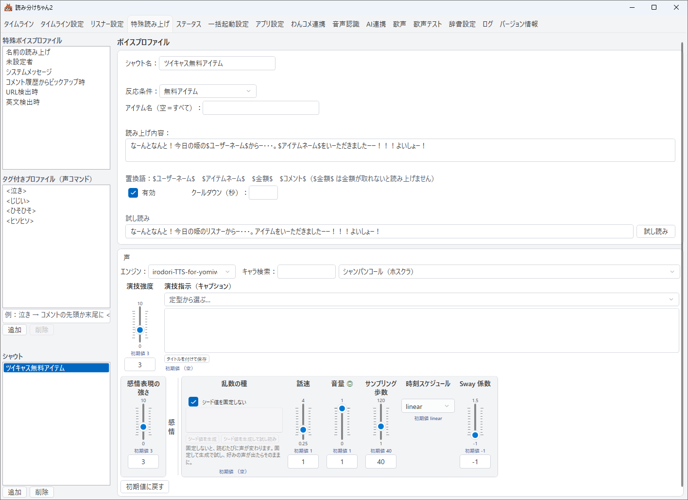
「特殊読み上げ」タブのシャウト編集面（v2.14）。反応条件と読み上げ内容を決め、下の「声」でそのシャウトの声を選びます（クリックで原寸表示）
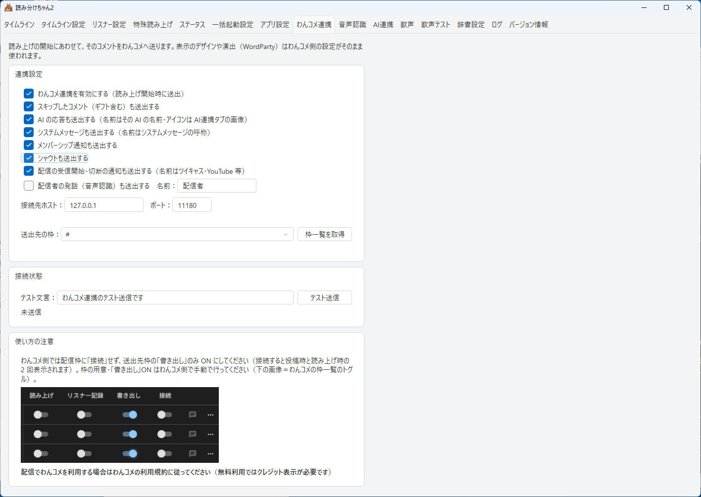
「わんコメ連携」タブ（v2.14）。送るメッセージの種類をチェックで選べます（クリックで原寸表示）
v2.13 の更新内容（2026-09-10）
2026-09-10 公開 ／前回配布版 v2.10 （2026-08-27）からの追加機能です
（先行して配布した v2.11 の内容も含みます）。
⚠ アップデートされる方へ：設定は引き継がれます／操作なしで変わる挙動があります
v2.10 からの更新は上書きインストールで、アプリ設定・リスナーごとのプロファイル・辞書・歌フレーズ・実績は
そのまま引き継がれます （初期設定ウィザードは出ません）。
次の点は、何も操作しなくても挙動が変わります。
起動するとエンジンのスキャンが自動で走り、「準備完了」で止まります。 コメントの取得は
タイムラインタブの [受信開始] （一括起動する方は [一括起動して受信開始] ）を押すまで始まりません。
「スキャンして受信開始」ボタンは無くなりました。歌の許可があるリスナーは [歌] を付けなくても歌います （歌とみなせるコメントの場合。
[歌] も従来どおり使えます）。一括起動のインターバル は「実際にアプリを起動したときだけ待つ」意味になりました。
一括起動の起動✓を入れると使用エンジンにも自動で入り 、使用✓を外すと起動✓も外れます。
接続前の過去ログ（基準線）は最初からタイムラインの過去側に並びます（選択モードの対象からは外れます）。
タブ名「読み上げアプリ起動設定」が「一括起動設定」 になりました。
旧版（v2.10 以前）への入れ戻しはしないでください。
新しい版が書いた設定ファイルを旧版は知らないため、設定やリスナーごとの通算が壊れることがあります。
🎨 新エンジン「irodori-TTS-for-yomiwakechan」に対応 感情や演技指示（自由文のプロンプト）で声色を作れる
音声合成 irodori-tts を、Python の環境構築なしで配信の声にできます 。配布ページ の
インストーラ（CUDA 版／Radeon 版）を入れれば、読み分けちゃん2 が自動で見つけて一括起動の席に並びます。
参照音声・シード・「シード値を生成して試し読み」で好みの声を作れます。GPU 推奨（導入と注意 ）。
Irodori-TTS-Server（コマンドライン導入）にも対応しています🗨 わんコメ連携（読み上げ同期送出） 読み上げの開始にあわせて、そのコメントをわんコメへ送ります。
OBS のシーン・テンプレート・WordParty などわんコメ側の資産はそのまま に、読み上げだけ読み分けちゃん2 に
差し替えられます。読んでいるコメントがそのとき画面に出るのが特徴です
（連携の手順 ）🤖 AI連携（複数 AI・発火ワード・呼びかけワード） コメントや配信者の声に AI が答えて読み上げます。
AI は何体でも作れて同時に動き、AI ごとに接続先・声・キャラ設定・アイコンを持てます。
ローカル LLM（LM Studio など）を推奨 ——外部への送信なし・利用料金なし・API キーの管理も要りません。
クラウドの接続先（Gemini／Groq／OpenRouter／DeepSeek／OpenAI／Anthropic／xAI）も使えます
（AI連携の手順と注意 ）🎤 音声認識（マイクの声を PC の中で文字に） 配信者の声をローカルで文字にして、
AI への呼びかけとタイムラインの字幕に使います。外部には送りません・API キーも不要です
（音声認識の設定 ）🚀 起動の手順が変わりました 起動するとスキャンが自動で走って「準備完了」になり、声や特殊読み上げの設定は
受信を始める前から 開けます。受信は [受信開始] から。エンジンを後から起動したら [再スキャン]
で取り直せます（受信中でも可）。毎回同じ構成で配信する方は、一括起動設定の「起動時に一括起動する」
（既定オフ）で起動と同時にエンジンを起こせます🔄 アプリ内から更新 「バージョン情報」タブの本体の [更新を確認] で新しい版を取得してインストーラを起動、
完了後に再起動します。コメント取得プログラムも同じタブの [更新] で個別に更新できます。
どちらも手動 です（v2.19 からは起動時に新しい版があるかを自動で確認してお知らせしますが、更新そのものは手動です）🎛 一括起動の改善 OBS Studio・わんコメも一括起動に含められます（既定オフ）。
進捗が小窓に出て、起動に時間のかかるエンジンから順に起こします。
※OBS 側で「起動時に自動的に配信を開始」を有効にしていると、一括起動で配信が始まります。
アプリを終了しても OBS は閉じません🕒 タイムラインの改善 「字幕」チェック（音声認識の字幕の出し入れ）、配信プラットフォーム情報の枠を
別ウィンドウに出せる 持ち手（左端の縦線をつまんで外へ）、上部の余白を詰めて表示域を拡大🎵 [歌] なしでも歌う 歌の許可があるリスナーの、歌とみなせるコメントはそのまま歌になります
（歌声タブの「[歌]なしの歌コメントも歌う」で切り替え）🧭 小さな改善 スキャン中の進み具合が小窓に出る／リスナー設定の左上に「名前読み上げ設定」「未登録者読み上げ設定」への
跳び先ボタン／一括起動設定が下までスクロールできる／辞書設定の対応表が縦に伸びる／AI の［接続テスト］成功時に
コンテキスト長を自動取得（LM Studio など）
画面で見る v2.13
稼働中のタイムラインタブ。上部の帯が [一括起動して受信開始] ・[受信開始] ・[再スキャン] の 3 つになり、
「字幕」チェックが加わりました。3 段目の配信プラットフォーム情報は、左端の縦線をつまんで別ウィンドウに出せます（画像はクリックで原寸表示）
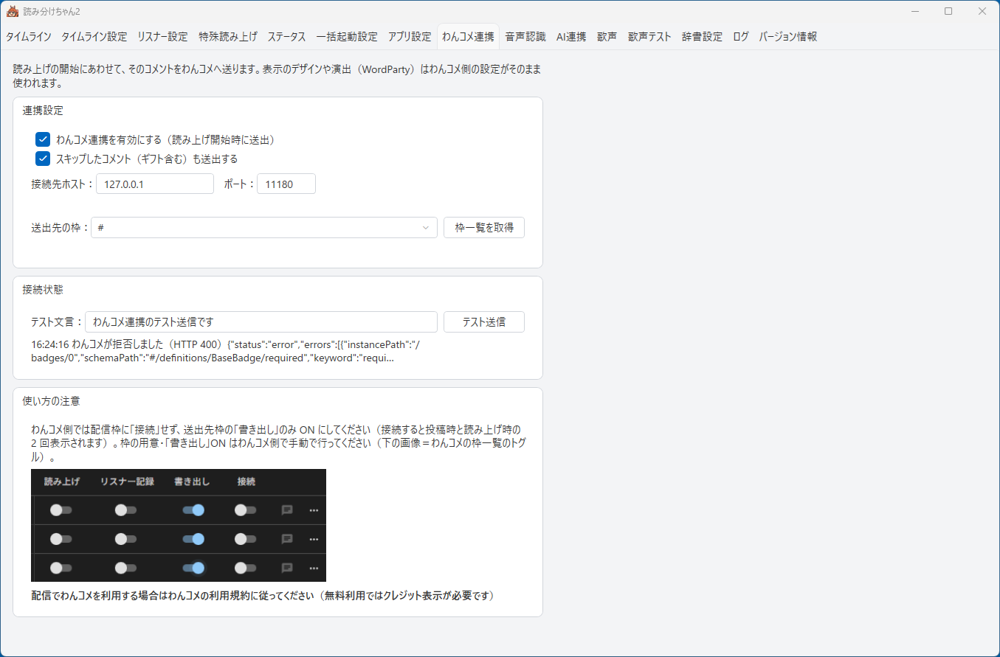
わんコメ連携タブ。元栓のチェックと送出先の枠、[テスト送信]、使い方の注意（わんコメ側の枠一覧で「書き出し」を ON にする）
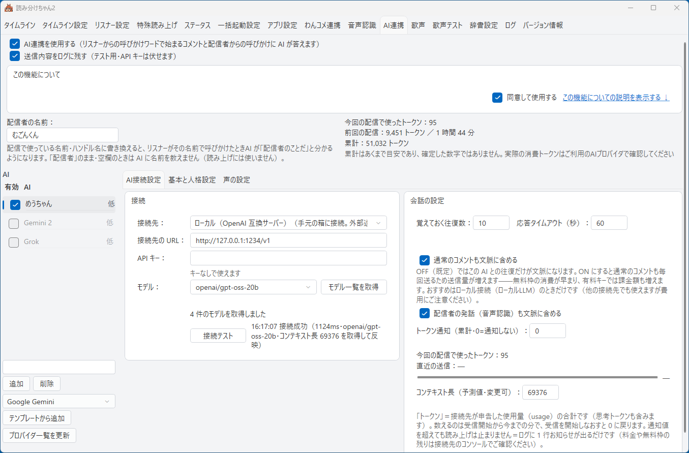
AI連携タブ。上の帯で「同意して使用する」にチェックを入れると、下の AI の一覧と設定が使えます。
画像はローカル LLM（LM Studio・gpt-oss-20b）に接続した状態＝API キーは空のままです
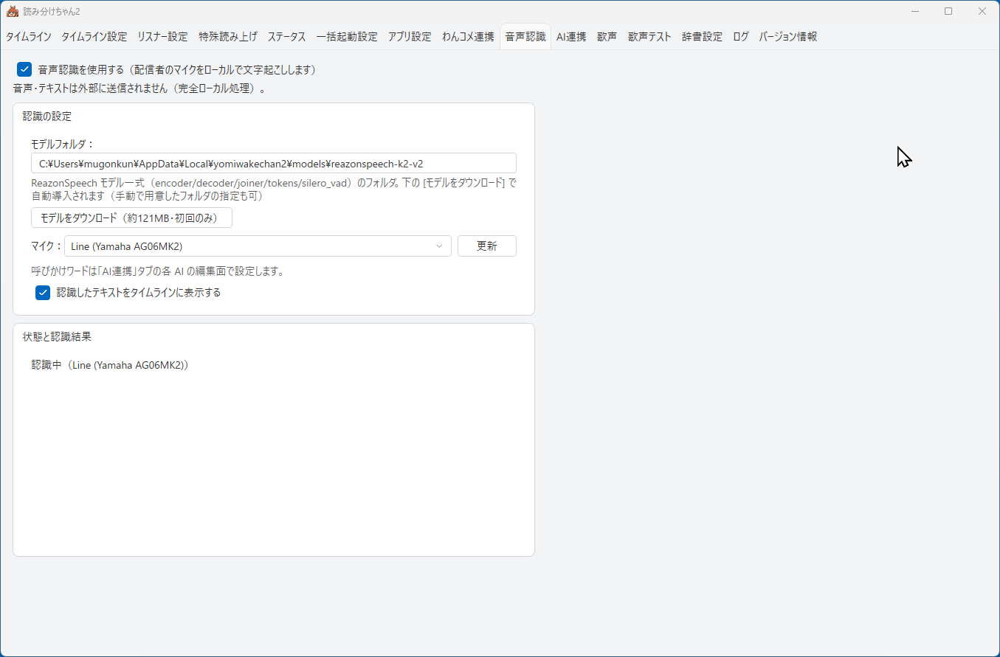
音声認識タブ。元栓を入れ、初回だけモデルをダウンロードし、マイクを選べば「認識中」になります（外部には送りません）
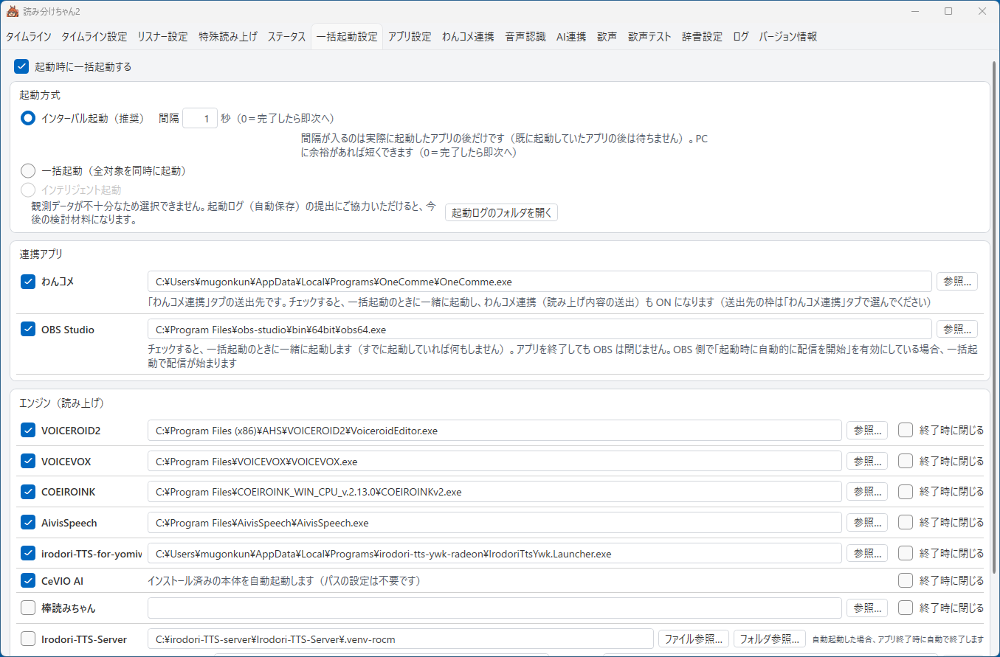
一括起動設定タブ。最上段の「起動時に一括起動する」（既定オフ）、連携アプリの段にわんコメと OBS Studio、
その下にエンジンの一覧（irodori-tts 系も並びます）
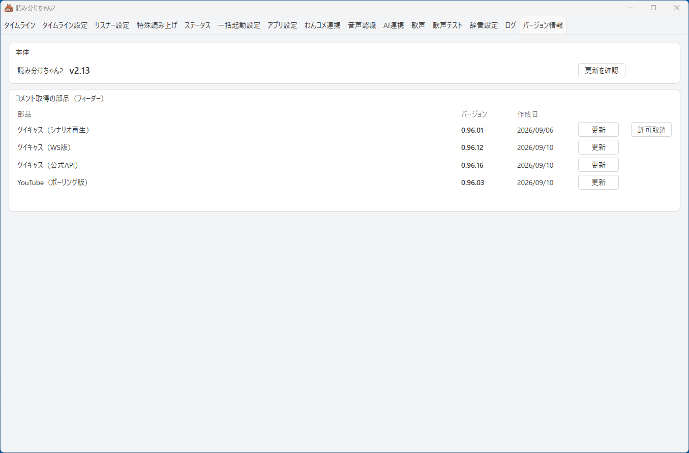
バージョン情報タブ。本体の [更新を確認] と、コメント取得の部品ごとの [更新]
（一番上の「シナリオ再生」は開発用の部品で、配布版には出ません）
※ 以下の 3 枚は v2.10 時点の写真です（機能の位置づけは v2.13 でも同じですが、一部の項目名・並びが変わっています）。
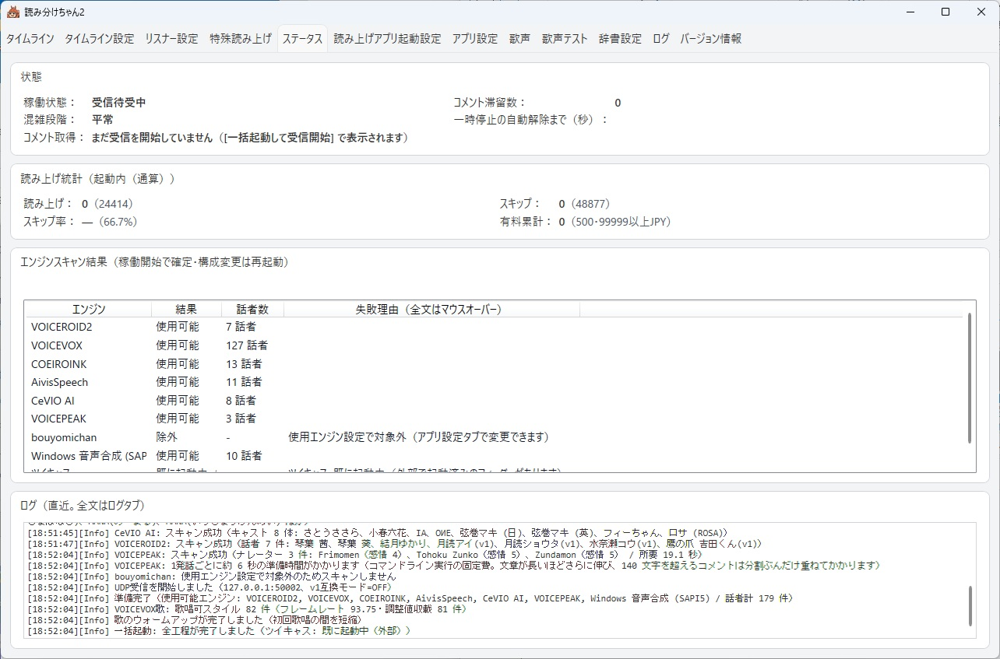
ステータスタブ。使えるエンジンと話者数がひと目で分かります
（画像は v2.10 時点。v2.13 では irodori-tts 系の 2 行が増えています・クリックで原寸表示）
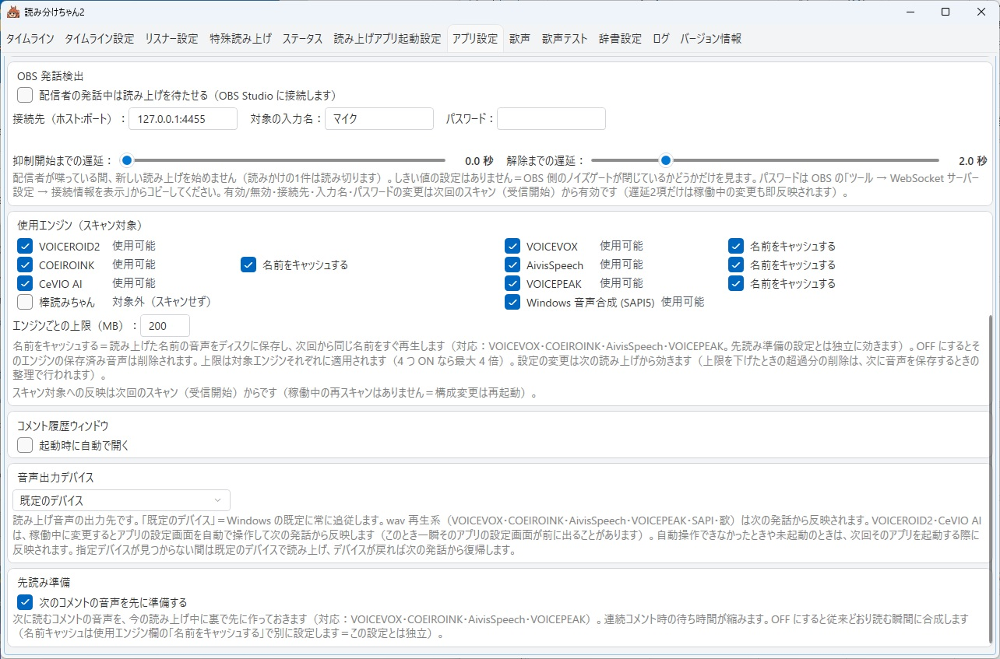
読み上げを速くしている仕組み。読み上げた名前の音声を保存しておく名前キャッシュ と、
次のコメントを裏で先に作っておく先読み準備 （どちらも既定でオン）
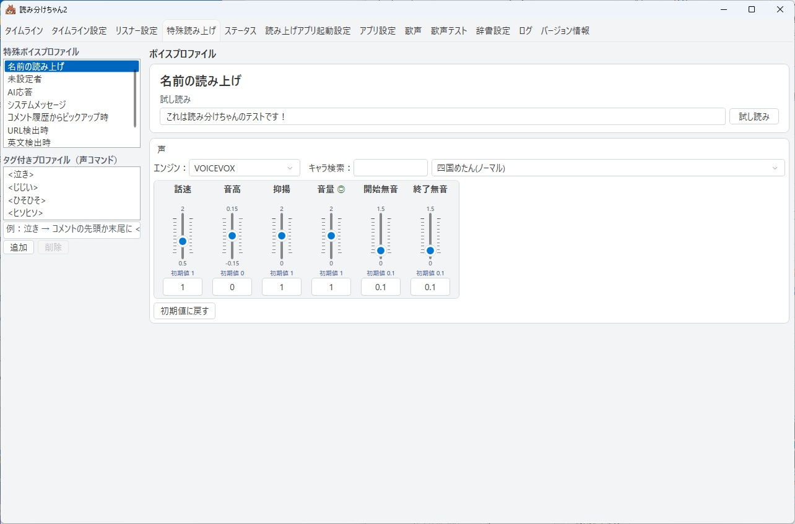
特殊読み上げタブ。名前の読み上げや、声コマンドのタグはここで調整できます
（リスナー設定タブの左上のボタンからも開けます。画像は v2.10 時点＝v2.13 では「AI応答」枠が無くなり、AI の声は AI連携タブで設定します）
💡 動作ログの記録について
不具合が起きたときに原因を調べられるよう、動作の記録（ログ）をお使いの PC の中に保存します。
ログが自動で外部に送信されることはありません。
不具合のご報告の際にログの提供をお願いすることがありますが、提供するかどうかはご自身の判断で構いません。※ AI連携タブの「送信内容をログに残す（テスト用・API キーは伏せます）」は既定オフです。
オンにすると AI へ送った会話の本文が手元のファイルに残るので、ログを人に渡すときはご注意ください。
できること
🗣 声の読み分け リスナーごとに好きな声・話速・音程を割り当て。VOICEVOX / COEIROINK / AivisSpeech / 棒読みちゃん / irodori-tts 系 / VOICEROID2 / CeVIO AI / VOICEPEAK / Windows 標準音声に対応（VOICEVOX を入れれば 100 を超える声・スタイルから選べます）📛 敬称と読み替え 「〜さん」「〜ちゃん」などの敬称、名前の読み替え、読み上げ辞書⚖ 優先度機構 コメントが混み合ったら、大事なコメントから読む（優先度 1〜10）。混雑時は低優先を自動スキップ💎 有料アイテムを見落とさない 有料アイテムは混雑時も必ず読み上げ。履歴にも残るので後からの見返しも確実📚 リスナーごとの累積 リスナーごとに応援の累積を記録。「いつもの人」をちゃんと覚えている台帳🎖 メンバーシップの把握 メンバーシップ加入状況を取得して履歴に表示。メンバー限定配信の
コメント取得にも対応（ツイキャス API 版。YouTube はブラウザ版でメンバー限定チャットも）🗨 わんコメ連携 読み上げと同期して、そのコメントをわんコメへ送出。わんコメ側の表示デザイン・演出はそのまま
（v2.13 で追加）🤖 AI連携 コメントや配信者の声に AI が答えて読み上げ。複数 AI・発火ワード・呼びかけワード・
リスナーごとの許可（低／高）。ローカル LLM 推奨（v2.13 で追加）🎤 音声認識 配信者のマイクの声を PC の中で文字にして、AI への呼びかけと字幕に（v2.13 で追加）。v2.24 からはシャウトの発火 にも（マイクで言った言葉に反応して定型文を読む）🎵 お歌機能（SONG） コメントに音符を書くとそのとおりに歌う。歌声テスト画面つき（記法ガイド ）🕒 タイムライン表示 コメントが流れる帯の上で、いま読んでいるコメント・これから読む
コメントがひと目で分かる主画面🎯 標準モード／選択モード 自動ですべて読む「標準」と、読みたいコメントだけを選ぶ
「選択モード」を切り替え🎛 一括起動 音声エンジン・コメント取得・OBS Studio・わんコメをボタン一つでまとめて起動。
起動時にどこまで進めるかも選べます（既定はスキャンだけ）🎤 マイク検出（OBS 連携） 自分がマイクで話している間は読み上げを待たせて、声かぶりを防止🎬 パッドで OBS のシーン切替 パッドの押下や読み上げの開始に合わせて OBS の番組シーンを切り替え（v2.23 で追加。Studio Mode 中はプレビューへ）🔄 アプリ内から更新 本体もコメント取得プログラムも「バージョン情報」タブから更新（手動のみ・v2.13 で追加）📜 履歴ウィンドウ 読み上げ履歴を別ウィンドウ表示。罫線オフのフラット表示で OBS の配信画面にも載せられる⏯ 一時停止・ピックアップ 読み上げの一時停止、履歴からの読み直し・手動投入🏷 声コマンド 許可したリスナーは、コメント先頭のタグで自分の声を切り替えられる👂 空耳モード 英語ボイスに日本語をしゃべらせる遊び機能🤝 コラボ配信対応 コラボ相手の枠のコメントもまとめて取得・読み分け🌐 対応する配信サイト ツイキャス・YouTube・ニコニコ生放送・Twitch・ふわっち・ミクチャ・Kick・ミラティブ（コメント取得ツールを同梱。v2.20／v2.21／v2.22a で拡張）
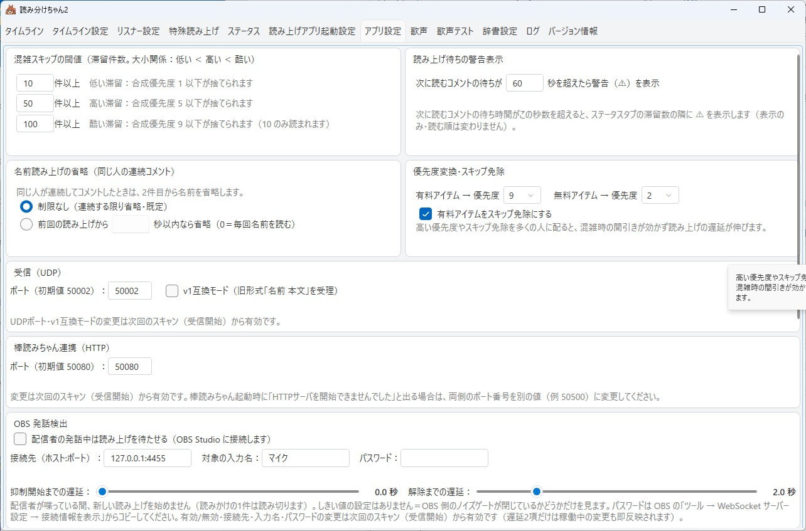
混雑したときの振る舞いはここで決めます。滞留の段階ごとに、どの優先度まで捨てるか
（有料アイテムはスキップ免除にできます）
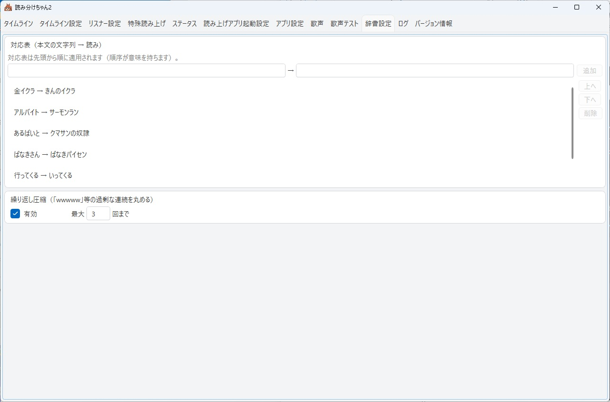
読み上げ辞書。読み間違えやすい言葉や、配信内の言い回しをまとめて置き換えられます
（「wwwww」のような連続を丸める設定つき。画像は v2.10 時点＝v2.13 では対応表が下段に移り、縦に広く使えます）
v2 開発の背景
読み分けちゃんの初代（v1）は、作者自身のツイキャス配信のために生まれ、
4 年にわたって実際の配信で使われてきました。
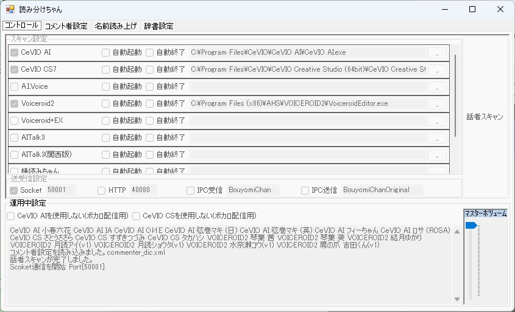
初代（v1）のコントロール画面（画像はクリックで原寸表示）
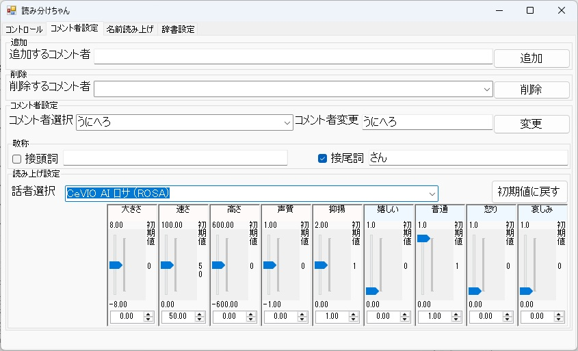
初代（v1）のコメント者設定画面。ここから 4 年の実運用が始まった
v2 は、その 4 年間の実用経験と、配信に来てくれたリスナーさんたちの提案 を
土台に、ゼロから設計し直したものです。
小さな配信でも、コメントの波は来る。 常連さんが集まって一気にコメントが流れる瞬間に、
大事なコメントを取りこぼさないための優先度機構 。有料アイテムは絶対に見落とさない。 混雑していても必ず読み、履歴に残す。リスナーごとに応援を累積。 その場かぎりではなく、「これまでどれだけ応援してくれたか」を
覚えている台帳を中心に据えました。メンバーシップを把握。 加入してくれた人がちゃんと分かるように。そして、遊びとしてのお歌機能。 リスナーがコメントで歌わせて遊べる——
テスト配信では、リスナーさん発の歌い方の発明まで生まれています。
読み上げの「便利さ」だけでなく、配信者とリスナーの関係を覚えて、遇するためのツール 。
それが読み分けちゃん2 です。
ご利用にあたってのお願い
まだ発展途上の項目があります。 不具合や、動作が育ちきっていないところがあります
（既知の発展途上項目 ）。気づいたことがあれば、ぜひ教えてください。
皆さんの報告が、そのまま次の版の品質になります。AI連携を使う方へ。 接続先がローカルでもクラウドでも、アプリ内の「この機能について」を読んで
「同意して使用する」にチェックを入れないと、AI の一覧と設定は使えません。外部の AI サービスに接続する場合は、
送信される内容・利用料金・免責を必ずお読みください（同じ内容をガイドにも載せています ）。使用期限について ：開発途上の機能を多く含むため、安全のための予防的措置として使用期限を
設定しています（古い版が使われ続けることを防ぐためのもので、機能制限が目的ではありません）。
使用期限はアップデートのたびに約 1 年延長される予定です。期限が近づいたら、
このページまたはアプリ内の「バージョン情報」タブから新しいバージョンを入手してください。再配布はしないでください。 お知り合いに紹介いただけるときは、
この公式配布ページの URL（https://github.com/mugonkun/yomiwakechan_v2）をお伝えください。詳しい利用条件は、インストーラ表示の利用規約・同梱の license.txt をご覧ください
（同梱する第三者ソフトウェアのライセンス表記も license.txt にあります）。
連絡先・最新情報
最新情報・お知らせ：X @yomiwakechan
不具合報告・要望：X @yomiwakechan へのリプライ・DM、
または配信で直接どうぞ。アプリの「バージョン情報」タブの「不具合の報告」から、状況とログ（v2.24a からは配信の生ログも選んで）をまとめた報告ファイルを作って
［送信］で開発者へ送ることもできます（自動では送られません）。報告ファイル（zip）は X の DM には添付できません
謝辞
読み分けちゃん2 は、実際の配信で使いながら育ててきたツール です。
使ってくださっている皆さんの「こうだったら嬉しい」を取り込みながら、いまも磨き続けています。
気づいたことがあれば、ぜひ教えてください。使っていただけること自体が、いちばんの励みです。
初代・読み分けちゃん（v1）を作っていたころ、音声合成ソフトを外部から扱うための技術情報について、
AssistantSeika 開発者の「努力したWiki」 に協力を仰ぎ、情報を展開していただきました。
いまの読み分けちゃん2 の土台にある知見の一部は、ここに遡ります。
この場を借りて、深く感謝申し上げます。